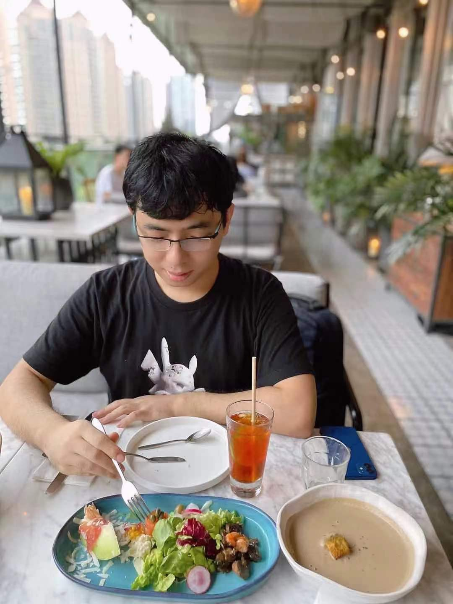

AS3R Lab
Advanced System Safety and Security Research Lab
The Advanced System Safety and Security Research Lab, under the leadership of Professor Chen Yuqi at the School of Information, ShanghaiTech University, is a pioneering laboratory dedicated to advancing research in software engineering and information security. With a primary focus on cutting-edge areas such as autonomous vehicle, cyber-physical system, program analysis, and formal methods, the lab aims to drive innovation and push the boundaries of knowledge in these fields.
Yuqi Chen

Yuqi Chen is an assistant Professor (tenure-track) at School of Information Science and Technology in the ShanghaiTech University. Yuqi completed his Ph.D. in 2019 at the Singapore University of Technology and Design (SUTD) under the supervision of Sun Jun. Besides, he also collaborated closely with Chris Poskitt. From 2019 to 2021, he worked as a Research Scientist in the System Analysis and Verification (SAV) group at Singapore Management University(SMU).
His research interest lies in cyber-physical system security in general. Specifically, he apply techniques like testing, reverse engineering, program analysis, and formal method to secure and analyze CPSs (e.g., autonomous vehicles, industrial control systems, and robotics systems).
Recruitment
I am looking for self-motivated PhD/MS students, postdoc, and research assistant to conduct research in areas of software engineering, system security, AI security, and autonomous vehicles. Please feel free to drop me an email with your CV if you are interested.
Contact Information
Email: chenyq@shanghaitech.edu.cn, phoenixcyq1994@gmail.com
Office: Room C-503.C, SIST Building 1, No.393 Huaxia Middle Road, Pudong Area Shanghai.